ggPSE is a ggplot2-based toolkit for visualizing element-, group- or period-resolved data on the periodic table of elements. Every function returns a standard ggplot2 object - so plots can be extended with themes, annotations, faceting, and patchwork.
Contents
- Installation
- Quick start
- Visualization modes
- Built-in element data
- Data visualization
- Themes
- Saving figures
- Experimental features
- Roadmap
- Citation
Installation
# Install from GitHub (requires remotes)
remotes::install_github("VJGeiger/ggPSE")If you want to plot with country flag badges 🇺🇸 🇮🇹 🇬🇧, also install ggflags (not on CRAN, but GitHub):
remotes::install_github("rensa/ggflags")Visualization modes
Numerated Tiles
The numeration can be switched on with show_atomic_number = TRUE, default is FALSEto avoid crowded tiles.
ggPSE(show_atomic_number = TRUE)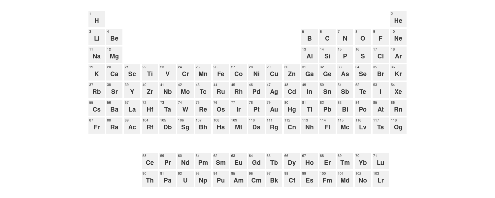
### Tile bordersAdapt the tile coloring as well as its borders for the whole PSE.
ggPSE(color_na = "white", tile_border = "gray40")Show Selection
If you are interested ind displaying only a part of the PSE you can specify this via the periods and groups as a default lanthanides and actinides are always set to be displayed and have to be actively omitted by using lanthanides = FALSE.
# Periods 4-6 with lanthanides
ggPSE(periods = c(4, 6), groups = c(3,4), lanthanides= FALSE, actinides = FALSE)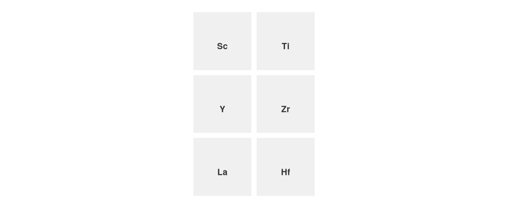
Highlight elements
Color named subsets of elements with a legend entry per group.
ggPSE(highlight = list(
list(symbols = c("Li", "Co", "Ni", "Mn", "Fe", "P"),
color = "#2166ac",
label = "Battery metals"),
list(symbols = c("Nd", "Dy", "Tb", "Pr", "La", "Ce"),
color = "#e63946",
label = "Rare earth magnets")
))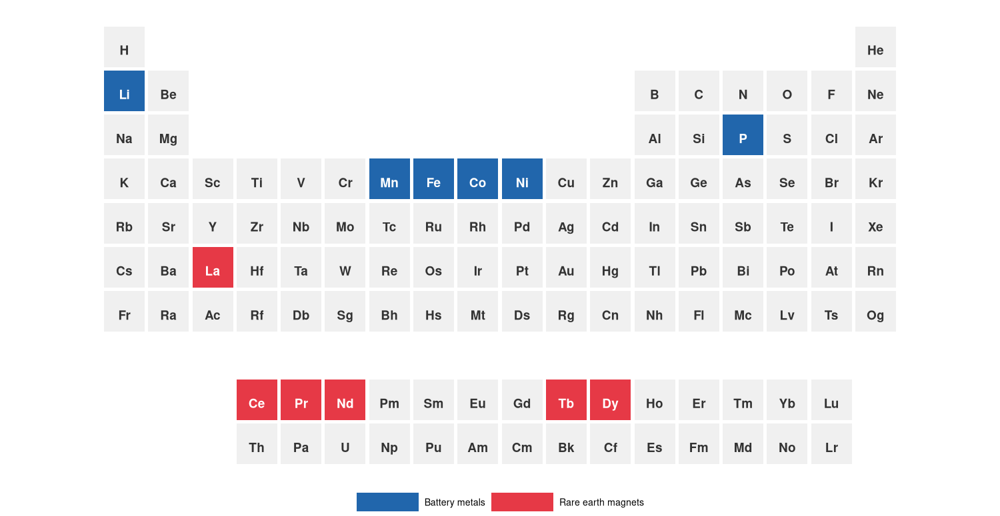
Built-in element data
ggPSE ships with ggpse_elements, a data frame of 17 physical and chemical properties for all 118 elements (IUPAC 2021, NIST WebBook, Pauling 1960):
data(ggpse_elements)
ggPSE(ggpse_elements, value_col = "electronegativity",
legend_title = "Electronegativity (Pauling)")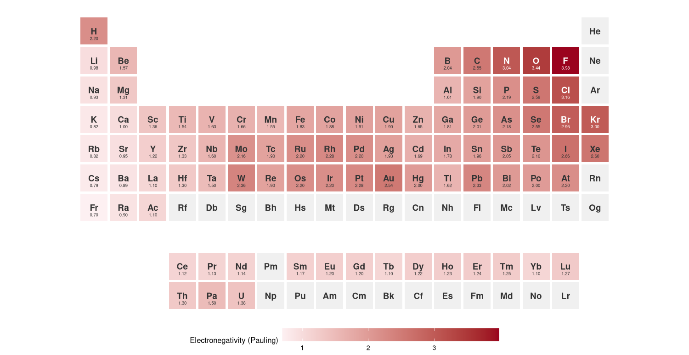
Data visualization
Color Gradient
Map any numeric variable to a fill color gradient across all elements.
battery <- data.frame(
symbol = c("Li", "Co", "Ni", "Mn", "Fe", "P", "C"),
importance = c(0.95, 0.88, 0.75, 0.60, 0.45, 0.40, 0.35)
)
ggPSE(battery,
value_col = "importance",
color_low = "#f7fbff",
color_high = "#08306b",
legend_title = "Battery relevance")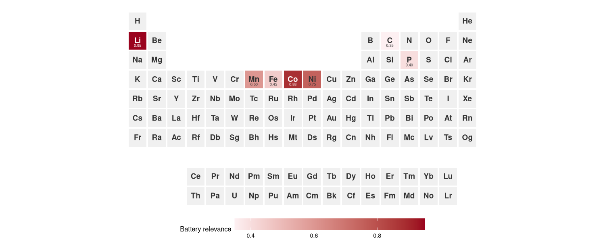
The mapping can also be applied to a selection of the PSE.
data(ggpse_elements)
ggPSE(ggpse_elements[ggpse_elements$block == "d", ],
value_col = "density_g_cm3", legend_title = "Density (g/cm3)")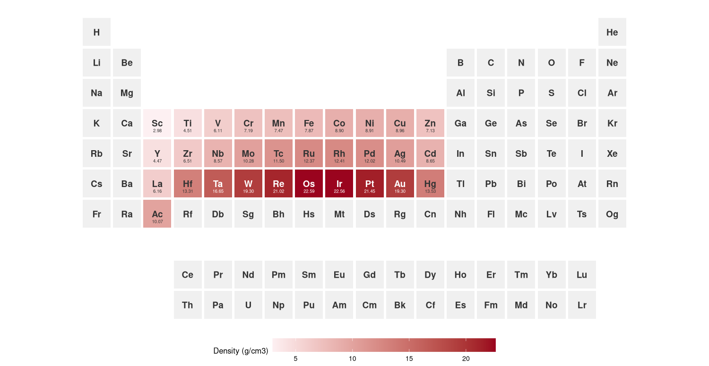
It is also possible to customize the ggplots to multigradient scales for better visualization.
data(ggpse_elements)
ggPSE(ggpse_elements,
value_col = "density_g_cm3",
color_low = "#2166ac",
color_high = "#a50026",
legend_title = "Density (g/cm³)") +
ggplot2::scale_fill_gradientn(
colours = c("#2166ac", "#1a9850", "#a50026"),
na.value = "#f0f0f0",
name = "Density (g/cm³)"
) +
ggplot2::labs(title = "Elemental density across the periodic table") +
ggplot2::theme(plot.title = ggplot2::element_text(hjust = 0.5, face = "bold"))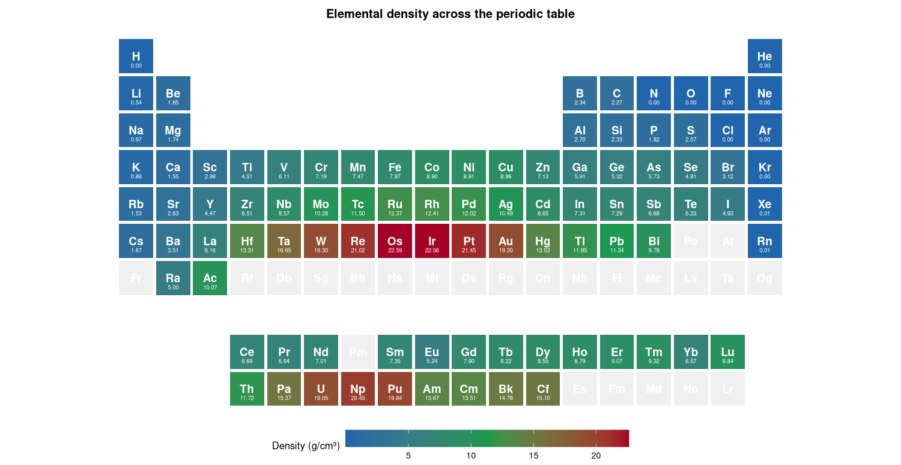
Bubble plot
Map a numeric variable to bubble size.
supply_risk <- data.frame(
symbol = c("Li", "Co", "Nd", "Dy", "Pt", "Rh", "In", "Ga"),
risk = c(0.62, 0.91, 0.84, 0.88, 0.52, 0.70, 0.78, 0.65)
)
ggPSE_bubble(supply_risk, size_col = "risk", legend_title = "Supply risk")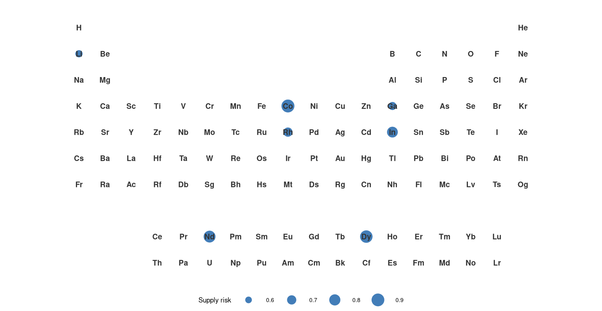
In-tile bar encoding
Draw a proportional bar inside each tile growing from a chosen edge ("bottom", "top", "left", or "right").
ggPSE_bar(supply_risk, value_col = "risk",
bar_side = "bottom",
bar_color = "#2166ac",
legend_title = "Supply risk")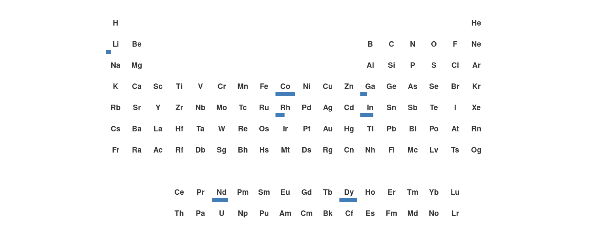
Donut Charts
One can add donuts per field to display distributions with element resolution. With the plot_all =TRUE it is optional to display all elements even those without data.
supply <- data.frame(
symbol = c("Li","Li","Li", "Co","Co", "Nd","Nd", "Pt"),
category = c("CL","AU","AR", "CD","AU", "CN","RU", "ZA"),
share = c(0.60, 0.30, 0.10, 0.70, 0.30, 0.80, 0.20, 1.00)
)
ggPSE(groups = c(3,12)) |>
gPSE_donut(supply, category_col = "category", share_col = "share", plot_all = FALSE)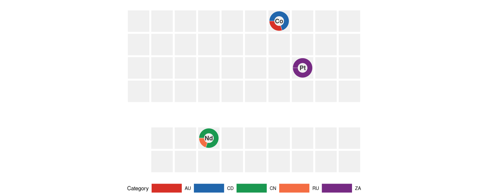
Period and group profiles
The display of selected periods and rows with corresponding data can be achieved via the ggPSE_profile() function. Elements with no values are omitted.
ggPSE_profile(ggpse_elements, value_col = "electronegativity", period = 6)
# or
ggPSE_profile(ggpse_elements, value_col = "electronegativity", group = 12)
# or
ggPSE_profile(ggpse_elements, value_col = "electronegativity", lanthanides = TRUE)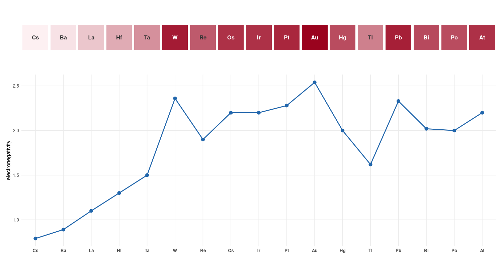
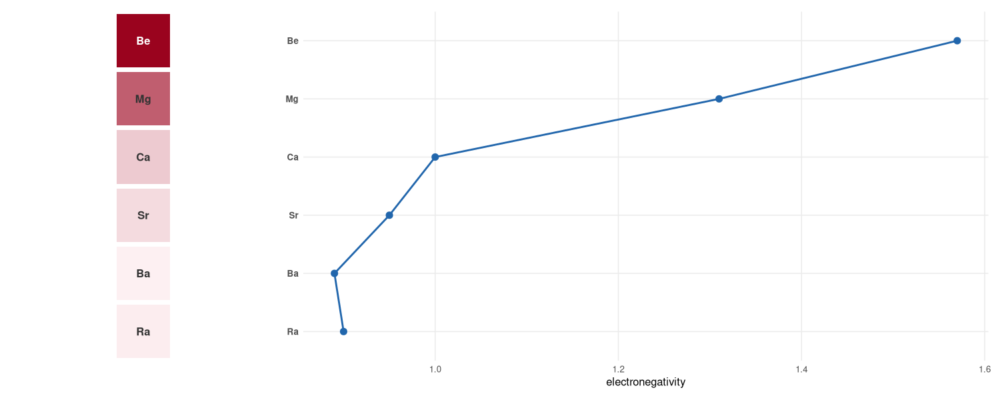
Country-of-origin badges
Overlay country flags (via ggflags) or ISO 3166-1 alpha-2 text codes. Up to three flags per tile are supported. These tiles can be displayed with a hierarchy (1st-2nd-3rd “place”). A legend is optional and can be positioned around the plot.
supply <- data.frame(
symbol = c("Li", "Co", "Nd", "Pt"),
country = c("CL", "CD", "CN", "ZA"),
value = c(0.70, 0.91, 0.85, 0.60)
)
ggPSE(supply, value_col = "value", legend_title = "Criticality") |>
ggPSE_badge(supply, country_col = "country")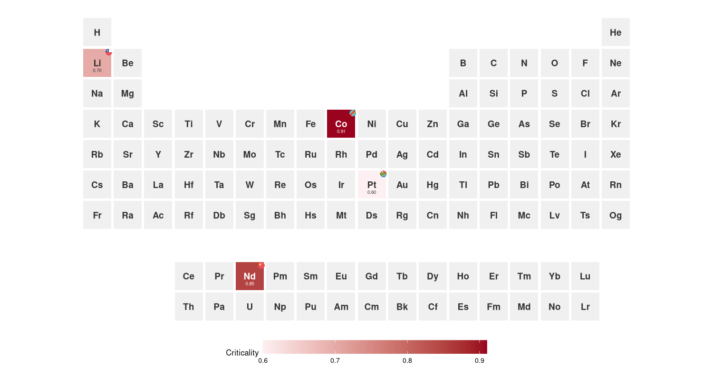
supply_multi <- data.frame(
symbol = c("Li", "Li", "Co", "Co", "Co", "Nd", "Pt"),
country = c("CL", "AU", "CD", "AU", "ZM", "CN", "ZA"),
value = c(0.70, 0.70, 0.91, 0.91, 0.91, 0.85, 0.60)
)
ggPSE(supply_multi, value_col = "value",
color_high = "#b2182b", legend_title = "Criticality") |>
ggPSE_badge(supply_multi, country_col = "country")
ggPSE(supply_multi, value_col = "value") |>
ggPSE_badge(supply_multi, country_col = "country",
hierarchy = TRUE, hierarchy_scale = c(1.0, 0.6, 0.5), show_legend = TRUE, legend_position = "bottom")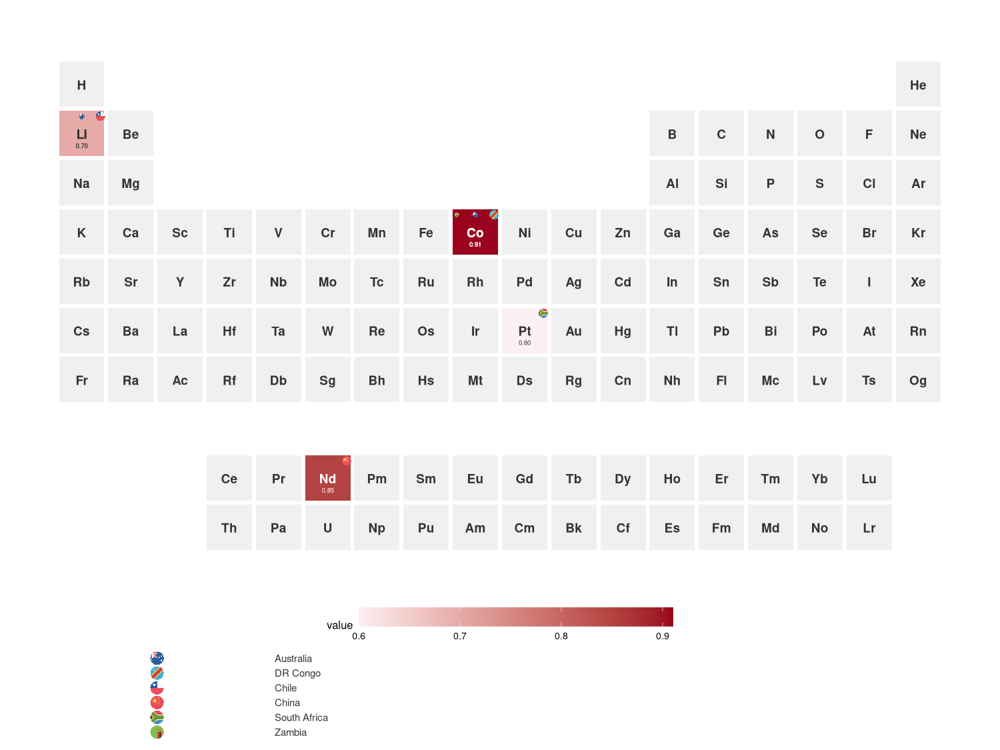
—Interactive plots
The displayed values can be made into interactive plots with ggPSE_interactive() 👉 Interactive periodic table example
ggPSE_interactive(battery, value_col = "importance")
# or
ggPSE_interactive(
ggpse_elements,
value_col = "electronegativity",
tooltip_cols = c("name", "atomic_weight", "block", "electronegativity"),
legend_title = "Electronegativity (Pauling)"
)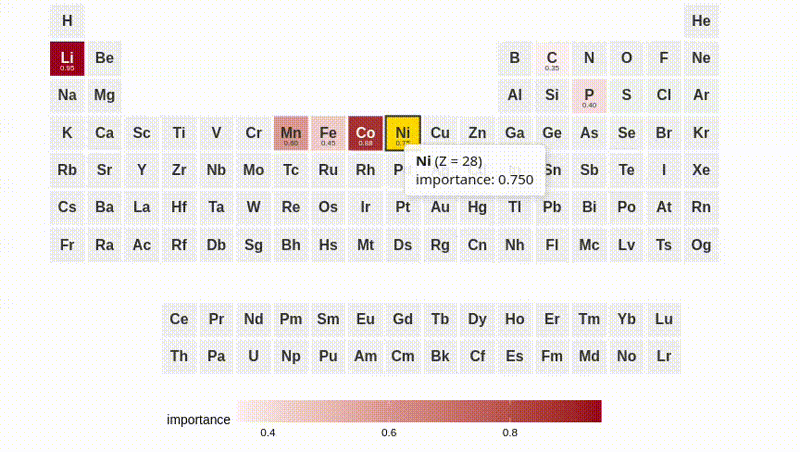
Themes
There are four prebuilt themes available via ggPSE_theme(). | Theme | Description | |—|—| | "minimal" | White background, simple| | "dark" | Dark plot background | | "publication" | Minimal ink, transparent background, journal-ready | | "crazy" | Random color per tile, reproducible with seed |
# Minimal
ggPSE() |> ggPSE_theme("minimal")
# Publication
ggPSE(ggpse_elements, value_col = "electronegativity") |>
ggPSE_theme("publication")
# Crazy — reproducible
ggPSE() |> ggPSE_theme("crazy", seed = 42)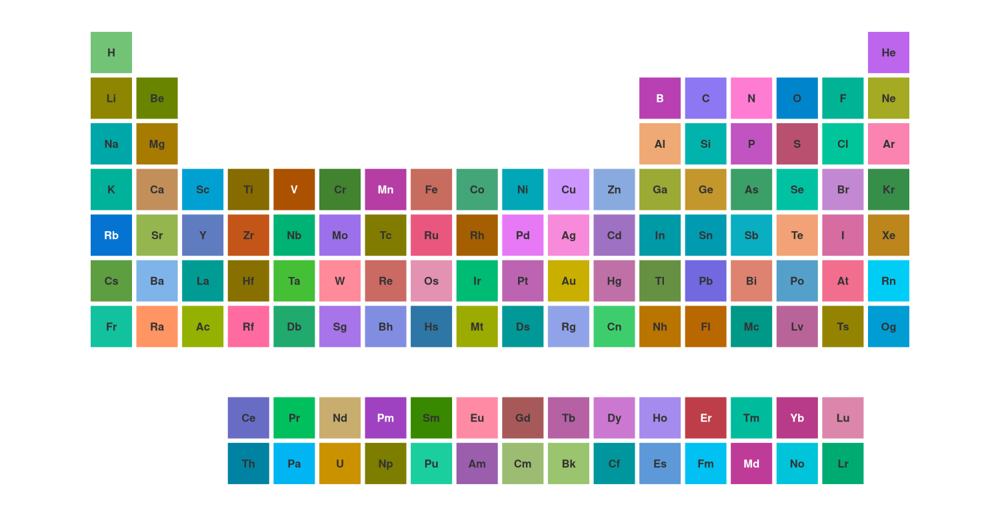
Saving figures
Figures can be saved via the wrapper ggPSE_save() for ease. For more custom plots, ggsave() can be used as well.
data(ggpse_elemts)
p <- ggPSE(ggpse_elements, value_col = "electronegativity")
ggPSE_save(p, "electronegativity.png") # PNG 18x14cm at 400dpi
ggPSE_save(p, "electronegativity.pdf") # vector PDF
ggPSE_save(p, "electronegativity.svg") # web SVG
ggPSE_save(p, "electronegativity.png", width = 24, height = 9, dpi = 600)Experimental features
ggPSE_sparkline() and ggPSE_spark_bar() per-tile time series sparklines was deemed too unstable and in need of further development.
Available on the feature/sparkline branch:
remotes::install_github("VJGeiger/ggPSE@feature/sparkline")Contributing
Issues and pull requests welcome. Please open an issue before starting significant work so we can discuss the approach first.
Alternatives
R alternatives
- periodicdata: Rich on dataset for the periodic system in R.
- PeriodicTable: Simplest alternative for a PSE.
Citation
If you use ggPSE in a publication, please cite it as:
Valentin Geiger (2026). ggPSE: Periodic Table Visualization with ggplot2.
R package version 0.2.0. https://github.com/VJGeiger/ggPSEAcknowledgement
This package was developed with assistance from Claude (Anthropic), including function design, debugging, documentation, and iterative development throughout the entire codebase.